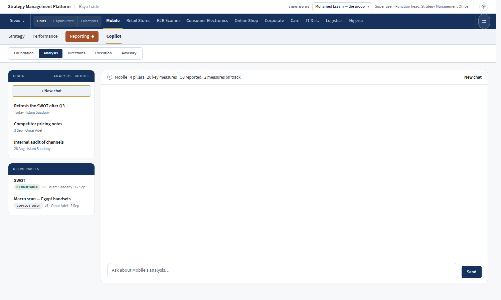
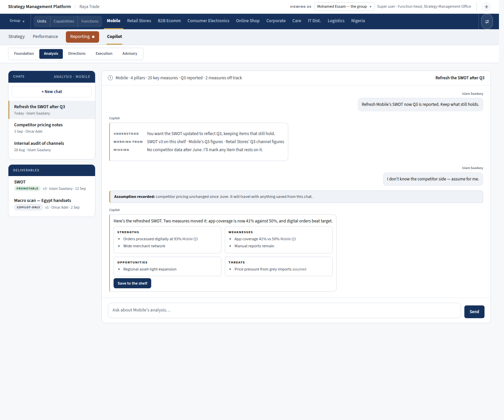
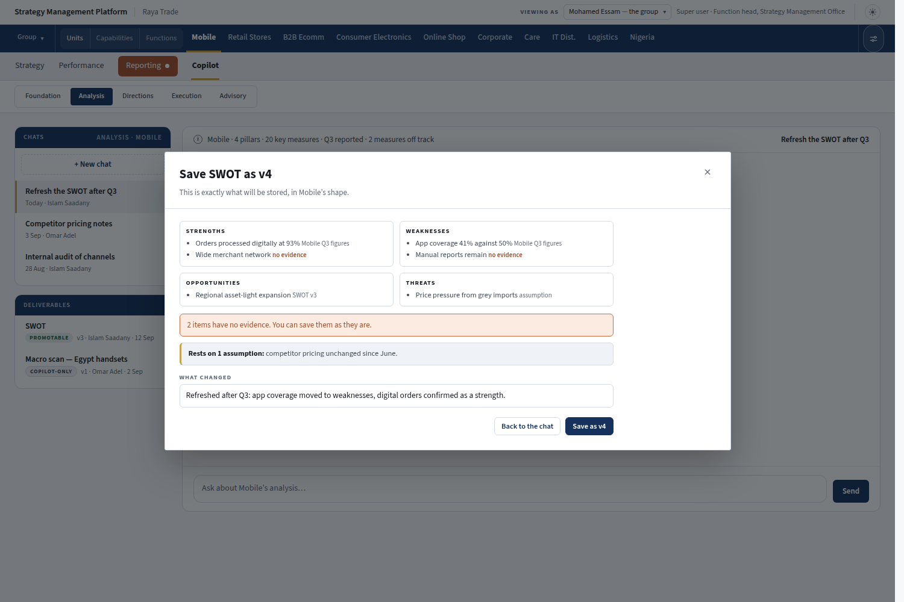
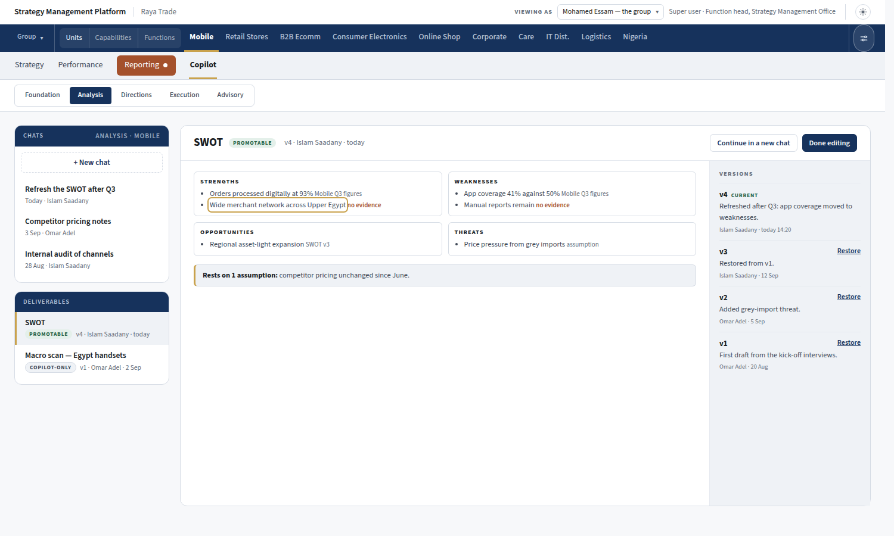
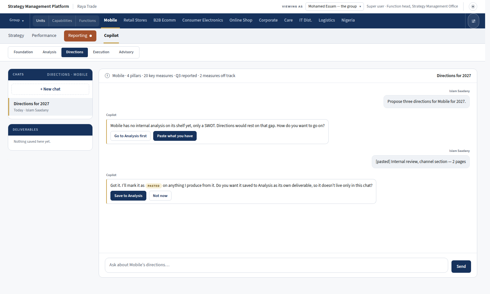
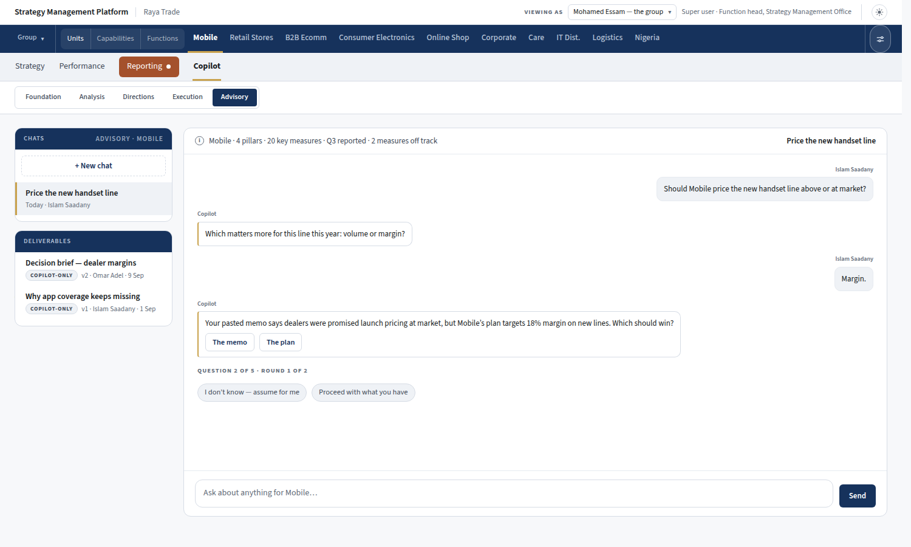
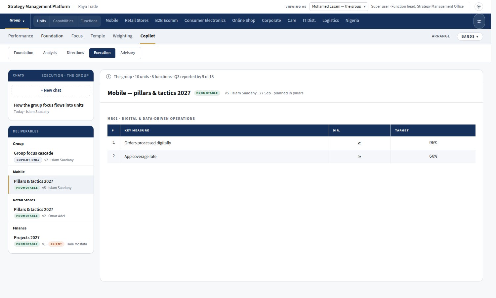

Each screen below is the running platform on Mobile's page, with the Copilot drawn in. The content is invented to show the shape. Nothing here is built yet.
Copilot joins the row after Reporting. Inside it are the five sections: Foundation, Analysis, Directions, Execution and Advisory. On the left are two rails for this section and place: Chats on top, with the + New chat button, and Deliverables below it. The chat itself is empty. The one line above it says what the AI can see for Mobile, and the i gives the detail on hover.

Before it writes anything, the AI says what it understood, what it will work from, and what is missing. When you say "assume for me", the assumption is recorded and travels with anything saved from that chat. The draft appears in the conversation with a Save to the shelf button.

The SWOT is rendered in Mobile's own shape and words. Each item shows its evidence, and the gaps and the assumption are said plainly. You write what changed, and it is saved as the next version of the same SWOT, not as a second copy.

Opening a deliverable shows it with its kind (Promotable or Copilot-only), who made it, and every version with its note, author and date. Edit lets you correct it in place; the shot shows editing in progress, with the item being changed outlined in gold. Every edit becomes a new version. Restoring an old version adds a new one at the top of the list, so nothing is lost.

Asked for directions with no internal analysis on the shelf, the AI says so and offers two ways on. Pasted material is marked as such, and the AI offers to save it to its own section.

Advisory keeps the old Consultant Mode's rules: one question per turn, a visible count against the budget (5 per round, 2 rounds), the two quick replies, and a contradiction put to you rather than decided silently. Its deliverables are Copilot-only, and the usual one is a Decision Brief.

The group has its own Copilot for cross-unit work. Its Deliverables rail groups deliverables under the place they belong to, and work made by a client's own person carries a Client mark beside the author's name.

The Copilot is for the Super user and the SMO team only. Nobody else sees the tab.